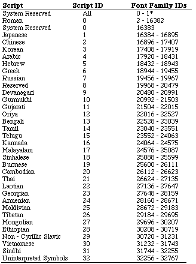

Legacy Document
Important: This document is part of the Legacy section of the ADC Reference Library. This information should not be used for new development.
Current information on this Reference Library topic can be found here:
ADC Home > Reference Library > Technical Notes > Legacy Documents > Text & Fonts >
Important: This document is part of the Legacy section of the ADC Reference Library. This information should not be used for new development.
Current information on this Reference Library topic can be found here:
|
Introduction
The A Brief History of Fonts Resources and Font Family IDs
There are, as of System 7.0, four types of resource for storing font data and
font family information:
When the Macintosh was first introduced, all font data was stored in the
With the arrival of the 128K ROMs came two new resources,
The addition of outline font support saw the introduction of the 'sfnt'
resource, whose internal format differs substantially from the older font data
resources ( Scripts and their RangesAs stated in the introduction, each script interface system that can run on the Macintosh has a range of font family IDs assigned to it. A script's range can be calculated (see Macintosh Technical Note #242, "Fonts and the Script Manager"), but a table of scripts, their script IDs, and the range of font family IDs assigned to each script are provided in this Note. 
Breakdown of the Roman Script RangeThe 16,384 IDs available for Roman systems are further delimited as follows: 0 to 255 Font families which are named in the method described in Inside Macintosh, Volume 1, The Font Manager. These IDs should no longer be used. Please note that Apple's system fonts (e.g., Chicago, Geneva, New York, etc.) will always retain their old IDs. Also note that IDs 0 and 1 are especially inviolate, as the system has the right to map any font family from any script system to these IDs. 256 to 1023 Reserved numbers. These numbers should be thought of as reserved space that the Font/DA Mover can use to resolve past and future font ID conflicts. Numbers in this range should not be used as a font family's original ID. 1024 to 16382 Commercial fonts. A particular Roman font family should always fall somewhere in this range, though its exact position may vary, or be altered during the copying of fonts, to avoid conflict with other families. 16383 Reserved. This number should not be used. On non-Roman script systems, the system font in that script will be ID 0. On such systems, Chicago is mapped to 16383 rather than 0; the system software will always look at 16383 rather than 0 for Chicago in these cases. Developers who use a font as a method of storing symbols which are used in a palette, or store a font in the resource fork of their application for some other special purpose, should use numbers in the range 32,256-32,767. This range is not associated with any script. The History of Font RegistrationObviously, there are a lot more font family IDs available for Roman systems than for any other. This situation is fortunate, because there are a lot more fonts designed and sold for Roman languages than for any other. In fact, today there are many more fonts than unique font family IDs, and so many families may be using the same ID, causing potential conflicts among them.
In an attempt to alleviate the As of late 1990, all free font family IDs had been registered, so any new font families created after that time must share their ID with a registered family; Developer Technical Support no longer registers family IDs. Ask For It by NameThe paucity of unique 'FOND' IDs is not as catastrophic as it sounds. Since April 2, 1988 (See Macintosh Technical Note #191, "Font Names"), Apple Computer has recommended that developers make all references to font families by name, not number. With that document's description of how to store font information by name in applications and documents, the only remaining major hurdle to 'FOND' ID independence was that the 'PICT' resource still identified fonts by family number; with System 6.0.5, however, a new 'PICT' opcode was added to allow 'PICT's to reference font data by 'FOND' name. As of this writing, nearly all major applications identify families by name, and since Font/DA Mover and System 7.0 renumber conflicting families when copying fonts, there should never be confusion except when using newer fonts on old software which references by number. Notes on the Location of Font ResourcesCertain restrictions apply when storing font resources in an application's resource fork. Due to the order of preference with which the font manager looks for font resources, you should make sure your application font does not use the same name as any system font resource. Otherwise, the system may unexpectedly or intermittently choose the system's version of the font over yours, particularly under System 7. Fonts should never be stored in a document's resource fork. If you close a font-laden document, the system will retain references to memory which was deallocated when the document closed; the system could then alter memory at those locations and corrupt the heap. In addition, System 7 does not support the storing of fonts in document resources. Note that HyperCard stacks are documents. If you feel that your stack loses all its artistic merit without a certain font, you should license it for distribution in a suitcase file and let the users install it in their systems. Fonts are proprietary; to include unlicensed fonts with your application violates copyright laws. Contact a font developer for permission before releasing its fonts with your software. ReferencesInside Macintosh, Volume I, The Font Manager Inside Macintosh, Volume IV, The Font Manager Inside Macintosh, Volume VI, The Font Manager Technical Note M.IM.FontNames -- Font Names Technical Note M.TE.FontsAndScripts -- Fonts and the Script Manager The TrueType Font Format Specification, APDA catalog number M0825LL/A. MacPaint is a registered trademark of Claris Corporation. Change HistoryAdd this section if there are changes. If you're writing a new technote, then you can remove this section.
Downloadables
|
|